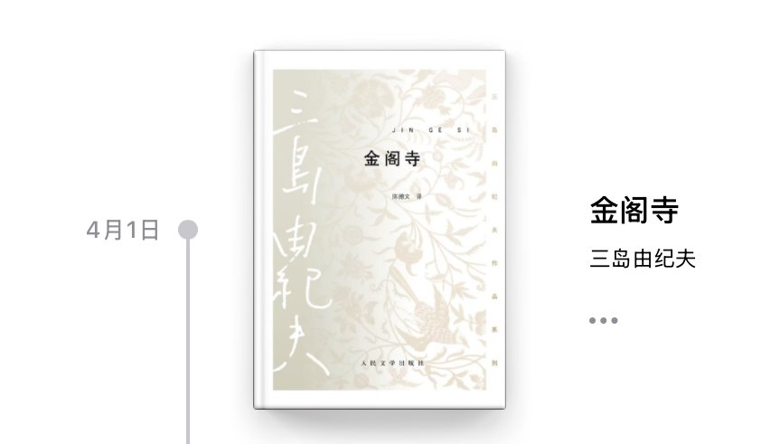

Sacabambaspis
@youlingjiayu
沟口的向往在战争中幻灭，于是鹤川自杀死了；沟口在无意义的生活中和柏木成为了朋友，于是死的本能将他带向了绝望和毁灭——最后金阁寺被烧掉了，但在纵火时，可能沟口才真的在死亡的追寻中活着。
金阁寺是永恒的美，在毁灭之后成为永恒；因为你是美的，因为我爱你的美，美不属于任何人，所以我毁灭你。

Sacabambaspis
@youlingjiayu
甲鱼不正经书评14
《金阁寺》
“世界上没有比金阁寺更美的东西。”
我总觉得沟口、柏木、鹤川其实是一个人，就像梅菲斯特和浮士德。沟口是摇摆不定的本我的自己，柏木是死是毁灭，鹤川是生是向往；而沟口所追寻的有为子则是和金阁寺一样的美的意象。 https://t.co/OzAskbiYlH